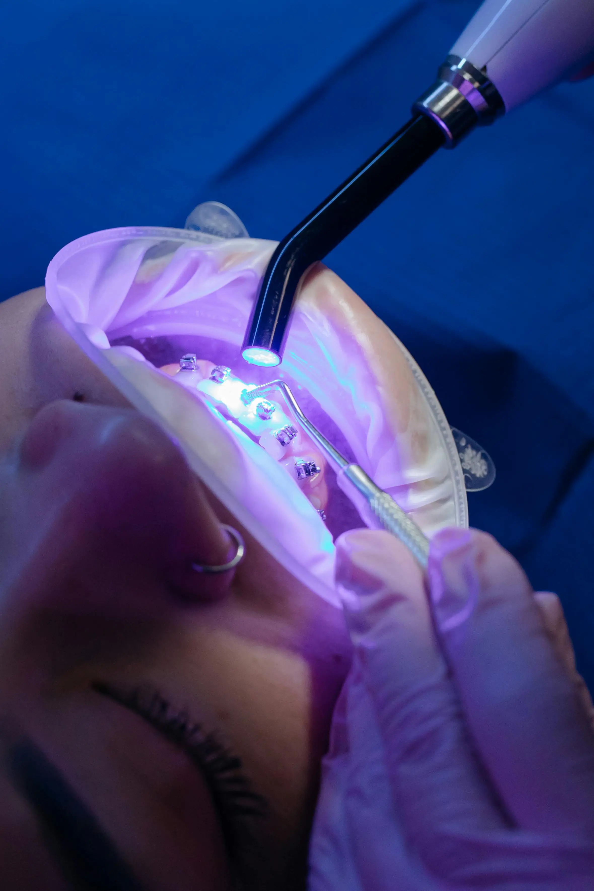

El futuro ya está aquí
Odontología Innovadora
Descubre las tecnologías innovadoras que mejoran los tratamientos dentales

Permiten obtener impresiones dentales digitales sin necesidad de las incómodas pastas tradicionales, ofreciendo mayor precisión y comodidad.

Revoluciona la fabricación de prótesis, férulas y modelos de estudio, reduciendo tiempos de espera y mejorando la exactitud.

Imágenes de alta resolución que permiten un diagnóstico más preciso con mucha menor radiación que los métodos convencionales.

La incorporación de tecnologías digitales en el consultorio dental ofrece múltiples ventajas: